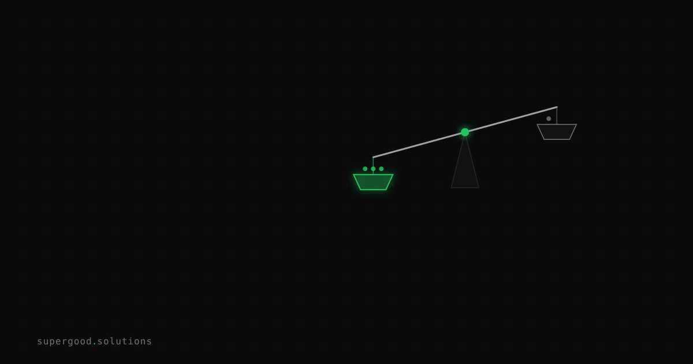

Stop Measuring AI Cost in Tokens and Start in Tasks
TL;DR: Procurement teams compare AI vendors on per-token pricing, but the number that actually lands on the P&L is cost per completed task. The cheapest model per token is often the most expensive model per outcome.
Key Insight
A frontier model that costs 9x more per token can still be the cheaper option in production — because the metric that matters isn't tokens consumed, it's tasks finished correctly on the first try. Every retry, every human correction, every silently wrong output that ships anyway is a cost that per-token pricing hides completely.
A recent benchmark running five agentic workflows (web research, code review, email triage, log analysis, content QA) 100 times each across five frontier models found GPT-5-mini at $0.026 per task versus Claude Sonnet 4.5 at $0.241 per task — a 9.3x gap. Look only at that number and the decision seems obvious. But GPT-5-mini also scored 11.2 accuracy points lower. On a task where a wrong answer gets caught downstream (a bad email draft, a missed log root-cause, a code review that misses a real bug), that accuracy gap isn't free. It shows up as rework, escalations, or a human quietly re-doing the agent's job — none of which appears in the token invoice.
Why Teams Miss This
Procurement and finance default to per-token pricing because it's the number vendors publish, it's easy to put in a spreadsheet, and it lets you compare models apples-to-apples on a single axis. But per-token cost answers "how expensive is one API call," not "how expensive is one finished piece of work." Those are different questions, and the gap between them is exactly where the hidden cost lives.
The same benchmark found Claude Haiku 4.5 costs 3.2x more per task than GPT-5-mini but wins specifically on tool-use reliability for sub-agents — the kind of workload where a dropped tool call doesn't just fail, it cascades into a broken multi-step pipeline. If your procurement scorecard only tracks $/million tokens, you will never see that distinction, and you'll pick the model that's cheapest to call and most expensive to actually rely on.
How to Actually Do It
- Define "task complete" before you benchmark. Pick the acceptance criteria a human reviewer would use — not "did it return JSON" but "would I ship this without editing it."
- Run the same tasks across your real candidate models, not a generic leaderboard. Capture tokens, latency, and a pass/fail against your acceptance bar for every run — a sample size of 20-30 runs per task is enough to see the pattern.
- Compute cost-per-successful-task, not cost-per-task. If a model has a 70% first-pass success rate, its effective cost is its raw cost divided by 0.7, plus whatever the retry or human-correction step costs.
- Add a latency SLO at P95, not the median. The same benchmark found P95 latency running 1.6-3.2x the median — plan your interactive-agent timeout budget on the tail, not the average.
- Re-run quarterly. Model pricing and accuracy both move fast enough that a benchmark from two quarters ago is a different decision today.
# Rough cost-per-successful-task calculation
cost_per_call = 0.026 # raw API cost for the task
success_rate = 0.70 # first-pass acceptance rate from your own eval
retry_or_fix_cost = 0.15 # human review / re-run cost when it fails
effective_cost = cost_per_call + (1 - success_rate) * retry_or_fix_cost
print(f"${effective_cost:.3f} per completed task")What We've Learned
The next time a vendor pitch leads with "$X per million tokens," ask for their accuracy rate on a task that looks like yours, and do the division yourself. If you don't already have an acceptance bar and a small eval set for your top 2-3 agent workflows, that's the actual next experiment — not switching models, but building the yardstick that makes switching models a real decision instead of a guess.
Sources
- Benchmark data and methodology: AI Agent Cost Benchmarks: Tokens, Latency, and Dollars per Task
- Related framing on price-per-task vs price-per-token: Price Per Task vs Price Per Token: AI Cost Guide 2026
- Enterprise cost-per-task economics: Cost Per Task: Claude vs OpenAI LLM Economics 2026
Have a specific workflow in mind?
Bring it to a Quick Scan — a live working session where we'll tell you honestly whether it should be an agent, a workflow, or left alone, before you spend a dollar building it. You get 3 prioritized recommendations on the call, a one-page summary after, and the $500 credited toward any engagement within 30 days.
Get new posts + practical agent-ops notes
One email when something new goes up. No nurture sequence, no spam — unsubscribe whenever you want.